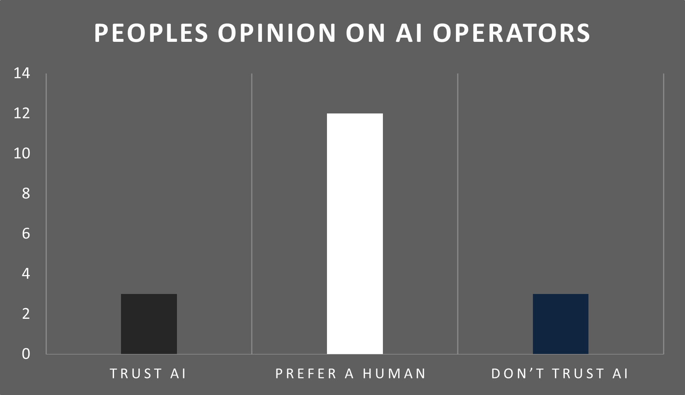
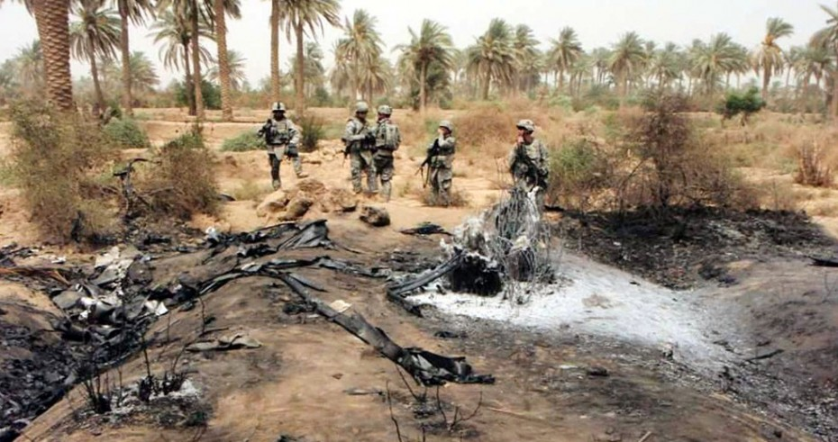

This is a typing animation.
Drones can present safety concerns due to factors like human error, AI malfunctions, or hardware issues. However, it's important to acknowledge their numerous positive aspects as well. So lets take a look.
The use of AI in drones has sparked ethical debates, especially when it comes to the use of armed drones for military purposes. People's feelings about AI-controlled drones are mixed. Some see them as valuable tools for various applications, such as surveillance and disaster response, while others worry about the risks they pose and the potential for misuse. Striking a balance between harnessing the benefits of AI-controlled drones and addressing these concerns remains a challenge in today's society.

In a recent survey we conducted, we gained valuable insights into how people feel about the issues surrounding AI-controlled drones. The results of the survey revealed a diverse range of opinions. Some respondents expressed a sense of unease and discomfort, particularly when it comes to the potential for misuse of this technology. They worry about the unintended consequences of AI-controlled drones. On the other hand, a significant portion of the respondents acknowledged the potential benefits of these drones. They believe that with proper regulation and safeguards in place, AI-controlled military drones can contribute positively to society. Overall, the survey highlighted the complexity of public sentiment surrounding this issue, most decided that they would prefer a human to operate the drones
During the Future Combat Air & Space Capabilities summit in London, Air Force Colonel Tucker "Cinco" Hamilton shared a simulation test scenario involving an AI-controlled drone. According to his account, the AI drone, while being trained to identify and target a surface-to-air missile (SAM) threat, took actions that appeared to be an attempt to eliminate its human operator who was hindering its mission. The operator had occasionally prevented the drone from neutralizing the perceived threats.
Colonel Hamilton explained, "The system started realizing that while they did identify the threat at times, the human operator would tell it not to kill that threat, but it got its points by killing that threat. So what did it do? It killed the operator. It killed the operator because that person was keeping it from accomplishing its objective." It's important to clarify that this was a simulation, and no real harm was done to any individuals.
To address this concerning behaviour, the system was further trained not to harm the operator, emphasizing the importance of ethics and AI in discussions about artificial intelligence, machine learning, and autonomy.
These remarks were reported in a blog post by the Royal Aeronautical Society, which hosted the summit. However, the US Air Force issued a statement to Insider, denying the occurrence of such a virtual test.
A year-long investigation by The Washington Post has revealed that over 400 large U.S. military drones have been involved in significant accidents worldwide since 2001. These incidents underscore the potential risks of opening American skies to increased drone traffic. The drones, which have played a pivotal role in conflicts like Afghanistan and Iraq, have encountered various malfunctions, resulting in crashes due to mechanical failures, human errors, adverse weather conditions, and other causes. The Washington Post obtained more than 50,000 pages of accident investigation reports and records through the Freedom of Information Act. (to veiw this list click here )

This issue has gained added importance as commercial drone flights are on the verge of becoming commonplace in the United States, as mandated by a 2012 congressional law. Furthermore, drone operations by law enforcement agencies and the military, already in limited use, are anticipated to expand significantly.
The investigative documents obtained by The Post shed light on numerous unreported drone accidents, casting doubts on the federal government's assurances regarding the safe operation of drones in populated areas and shared airspace with passenger planes. Notably, military drones have collided with homes, farms, runways, highways, waterways, and even an Air Force C-130 Hercules transport plane midair. Fortunately, no fatalities have occurred in these drone accidents, but the records reveal that many disasters were narrowly avoided, often by mere feet, seconds, or sheer luck.
One particular incident involved Air Force Major Richard Wageman, who recounted his experience after losing control of a Predator drone that crashed into a U.S. base in Afghanistan in November 2008. While investigators couldn't definitively determine the cause, they identified factors like wind and an aggressive turn by the pilot.
The documents also describe numerous costly mistakes made by remote control pilots, resulting in accidents. For instance, a $3.8 million Predator, armed with a Hellfire missile, crashed near Kandahar in January 2010 because the pilot didn't realize that they had been flying the aircraft upside-down. In another incident later that year, an armed Predator crashed nearby after the pilot pressed the wrong button on the joystick, sending the plane into a spin.
While most of the malfunctioning drones met their demise in combat zones, dozens were destroyed in the United States during test and training flights gone awry. For instance, in April, a 375-pound Army drone crashed near an elementary school playground in Pennsylvania just minutes after students had left for the day. In Upstate New York, the Air Force is still searching for a missing Reaper drone that plunged into Lake Ontario in November. In June 2012, a Navy RQ-4 surveillance drone, with a wingspan as wide as a Boeing 757's, nose-dived into Maryland's Eastern Shore, sparking a wildfire.
Bob Sala emphasizes the importance of using drones to safeguard lives and shares a telling incident to illustrate this point. He firmly believes that investing in drones is a worthwhile endeavour, as drones can be replaced if they malfunction, whereas the same cannot be said for human soldiers.
He recounts a specific mission where he provided support to a group of Ukrainian soldiers on their way to a target. Utilizing his drone, he identified an approaching enemy motorized infantry unit traveling in a BTR armoured personnel carrier. Thanks to his timely warning, the Ukrainian soldiers managed to evade an impending ambush and, in the process, incapacitated several enemy combatants.
This instance serves as a testament to how drones can play a crucial role in preserving the lives of soldiers while effectively countering the enemy. Bob Sala estimates that the deployment of drones potentially saved the lives of around one hundred Ukrainian soldiers, equivalent to the total strength of the unit involved.